Table of Contents
10. Trigonometry
10.1. Trigonometry and Right Triangles
10.1.1. Right Triangles and the Pythagorean Theorem
10.1.2. How Trigonometric Functions Work
10.1.3. Sine, Cosine, and Tangent
10.1.4. Finding Angles From Ratios: Inverse Trigonometric Functions
10.2. Trigonometric Functions and the Unit Circle
10.2.1. Radians
10.2.2. Defining Trigonometric Functions on the Unit Circle
10.2.3. Special Angles
10.2.4. Sine and Cosine as Functions
10.2.5. Tangent as a Function
10.2.6. Secant and the Trigonometric Cofunctions
10.2.7. Inverse Trigonometric Functions
10.3. Trigonometric Identities
10.3.1. The Law of Sines
10.3.2. The Law of Cosines
10.3.3. Pythagorean Identities
10.3.4. Angle Addition and Subtraction Formulae
10.3.5. Double and Half Angle Formulae
10.3.6. Trigonometric Symmetry Identities
10. Trigonometry
10.1. Trigonometry and Right Triangles
10.1.1. Right Triangles and the Pythagorean Theorem
The Pythagorean Theorem, ${\displaystyle a^{2}+b^{2}=c^{2},}$ can be used to find the length of any side of a right triangle.
Learning Objective
Use the Pythagorean Theorem to find the length of a side of a right triangle
Key Points
- The Pythagorean Theorem, ${\displaystyle a^{2}+b^{2}=c^{2},}$ is used to find the length of any side of a right triangle.
- In a right triangle, one of the angles has a value of 90 degrees.
- The longest side of a right triangle is called the hypotenuse, and it is the side that is opposite the 90 degree angle.
- If the length of the hypotenuse is labeled $c$ , and the lengths of the other sides are labeled $a$ and $b$ , the Pythagorean Theorem states that ${\displaystyle a^{2}+b^{2}=c^{2}}$ .
Key Terms
- Pythagorean theorem
- The sum of the areas of the two squares on the legs (
$a$ and$b$ ) is equal to the area of the square on the hypotenuse ($c$ ). The formula is$a^2+b^2=c^2$ . - legs
- The sides adjacent to the right angle in a right triangle.
- right triangle
- A
$3$ -sided shape where one angle has a value of$90$ degrees - hypotenuse
- The side opposite the right angle of a triangle, and the longest side of a right triangle.
Right Triangle
A right angle has a value of 90 degrees ($90^\circ$ ). A right triangle is a triangle in which one angle is a right angle. The relation between the sides and angles of a right triangle is the basis for trigonometry.
The side opposite the right angle is called the hypotenuse (side $c$ in the figure). The sides adjacent to the right angle are called legs (sides $a$ and $b$ ). Side $a$ may be identified as the side adjacent to angle $B$ and opposed to (or opposite) angle $A$ . Side $b$ is the side adjacent to angle $A$ and opposed to angle $B$ .
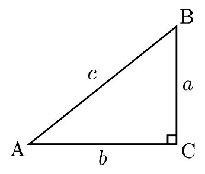{kind=link}
The Pythagorean Theorem can be used to find the value of a missing side length in a right triangle.
If the lengths of all three sides of a right triangle are whole numbers, the triangle is said to be a Pythagorean triangle and its side lengths are collectively known as a Pythagorean triple.
The Pythagorean Theorem
The Pythagorean Theorem, also known as Pythagoras' Theorem, is a fundamental relation in Euclidean geometry. It defines the relationship among the three sides of a right triangle. It states that the square of the hypotenuse (the side opposite the right angle) is equal to the sum of the squares of the other two sides. The theorem can be written as an equation relating the lengths of the sides $a$ , $b$ and $c$ , often called the "Pythagorean equation":[1]
In this equation, $c$ represents the length of the hypotenuse and $a$ and $b$ the lengths of the triangle's other two sides.
Although it is often said that the knowledge of the theorem predates him,[2] the theorem is named after the ancient Greek mathematician Pythagoras (c. 570 – c. 495 BC). He is credited with its first recorded proof.
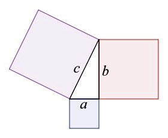{kind=link}
The sum of the areas of the two squares on the legs ($a$ and $b$ ) is equal to the area of the square on the hypotenuse ($c$ ). The formula is $a^2+b^2=c^2$ .
Finding a Missing Side Length
Example 1: A right triangle has a side length of $10$ feet, and a hypotenuse length of $20$ feet. Find the other side length. (round to the nearest tenth of a foot)
Substitute $a=10$ and $c=20$ into the Pythagorean Theorem and solve for $b$ .
Example 2: A right triangle has side lengths $3$ cm and $4$ cm. Find the length of the hypotenuse.
Substitute $a=3$ and $b=4$ into the Pythagorean Theorem and solve for $c$ .
10.1.2. How Trigonometric Functions Work
Trigonometric functions can be used to solve for missing side lengths in right triangles.
Learning Objective
Recognize how trigonometric functions are used for solving problems about right triangles, and identify their inputs and outputs
Key Point
- A right triangle has one angle with a value of 90 degrees ($90^{\circ}$ )The three trigonometric functions most often used to solve for a missing side of a right triangle are: $\displaystyle{\sin{t}=\frac {opposite}{hypotenuse}}$ , $\displaystyle{\cos{t} = \frac {adjacent}{hypotenuse}}$ , and $\displaystyle{\tan{t} = \frac {opposite}{adjacent}}$
Trigonometric Functions
We can define the trigonometric functions in terms an angle $t$ and the lengths of the sides of the triangle. The adjacent side is the side closest to the angle. (Adjacent means “next to.”) The opposite side is the side across from the angle. The hypotenuse is the side of the triangle opposite the right angle, and it is the longest.
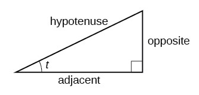{kind=link}
The sides of a right triangle in relation to angle $t$ .
When solving for a missing side of a right triangle, but the only given information is an acute angle measurement and a side length, use the trigonometric functions listed below:
- Sine $\displaystyle{\sin{t} = \frac {opposite}{hypotenuse}}$
- Cosine $\displaystyle{\cos{t} = \frac {adjacent}{hypotenuse}}$
- Tangent $\displaystyle{\tan{t} = \frac {opposite}{adjacent}}$
The trigonometric functions are equal to ratios that relate certain side lengths of a right triangle. When solving for a missing side, the first step is to identify what sides and what angle are given, and then select the appropriate function to use to solve the problem.
Evaluating a Trigonometric Function of a Right Triangle
Sometimes you know the length of one side of a triangle and an angle, and need to find other measurements. Use one of the trigonometric functions ($\sin{}$ , $\cos{}$ , $\tan{}$ ), identify the sides and angle given, set up the equation and use the calculator and algebra to find the missing side length.
Example 1: Given a right triangle with acute angle of $34^{\circ}$ and a hypotenuse length of $25$ feet, find the length of the side opposite the acute angle (round to the nearest tenth):
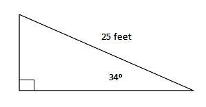{kind=link}
Given a right triangle with acute angle of $34$ degrees and a hypotenuse length of $25$ feet, find the opposite side length.
Looking at the figure, solve for the side opposite the acute angle of $34$ degrees. The ratio of the sides would be the opposite side and the hypotenuse. The ratio that relates those two sides is the sine function.
The side opposite the acute angle is $14.0$ feet.
Example 2: Given a right triangle with an acute angle of $83^{\circ}$ and a hypotenuse length of $300$ feet, find the hypotenuse length (round to the nearest tenth):
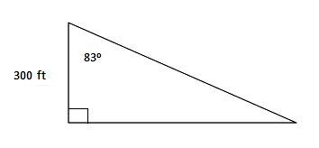{kind=link}
Given a right triangle with an acute angle of $83$ degrees and a hypotenuse length of $300$ feet, find the hypotenuse length.
Looking at the figure, solve for the hypotenuse to the acute angle of $83$ degrees. The ratio of the sides would be the adjacent side and the hypotenuse. The ratio that relates these two sides is the cosine function.
10.1.3. Sine, Cosine, and Tangent
The mnemonic SohCahToa can be used to solve for the length of a side of a right triangle.
Learning Objective
Use the acronym SohCahToa to define Sine, Cosine, and Tangent in terms of right triangles
Key Points
- A common mnemonic for remembering the relationships between the Sine, Cosine, and Tangent functions is SohCahToa.
- SohCahToa is formed from the first letters of “Sine is opposite over hypotenuse (Soh), Cosine is adjacent over hypotenuse (Cah), Tangent is opposite over adjacent (Toa).”
Definitions of Trigonometric Functions
Given a right triangle with an acute angle of $t$ , the first three trigonometric functions are:
- Sine $\displaystyle{ \sin{t} = \frac {opposite}{hypotenuse} }$
- Cosine $\displaystyle{ \cos{t} = \frac {adjacent}{hypotenuse} }$
- Tangent $\displaystyle{ \tan{t} = \frac {opposite}{adjacent} }$
A common mnemonic for remembering these relationships is SohCahToa, formed from the first letters of “Sine is opposite over hypotenuse (Soh), Cosine is adjacent over hypotenuse (Cah), Tangent is opposite over adjacent (Toa).”
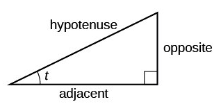{kind=link}
The sides of a right triangle in relation to angle $t$ . The hypotenuse is the long side, the opposite side is across from angle $t$ , and the adjacent side is next to angle $t$ .
Evaluating a Trigonometric Function of a Right Triangle
Example 1: Given a right triangle with an acute angle of $62^{\circ}$ and an adjacent side of $45$ feet, solve for the opposite side length. (round to the nearest tenth)
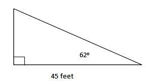{kind=link}
Given a right triangle with an acute angle of $62$ degrees and an adjacent side of $45$ feet, solve for the opposite side length.
First, determine which trigonometric function to use when given an adjacent side, and you need to solve for the opposite side. Always determine which side is given and which side is unknown from the acute angle ($62$ degrees). Remembering the mnemonic, "SohCahToa", the sides given are opposite and adjacent or "o" and "a", which would use "T", meaning the tangent trigonometric function.
Example 2: A ladder with a length of $30~\mathrm{feet}$ is leaning against a building. The angle the ladder makes with the ground is $32^{\circ}$ . How high up the building does the ladder reach? (round to the nearest tenth of a foot)
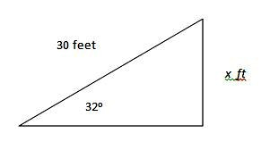{kind=link}
After sketching a picture of the problem, we have the triangle shown. The angle given is $32^\circ$ , the hypotenuse is 30 feet, and the missing side length is the opposite leg, $x$ feet.
Determine which trigonometric function to use when given the hypotenuse, and you need to solve for the opposite side. Remembering the mnemonic, "SohCahToa", the sides given are the hypotenuse and opposite or "h" and "o", which would use "S" or the sine trigonometric function.
10.1.4. Finding Angles From Ratios: Inverse Trigonometric Functions
The inverse trigonometric functions can be used to find the acute angle measurement of a right triangle.
Learning Objective
Use inverse trigonometric functions in solving problems involving right triangles
Key Points
- A missing acute angle value of a right triangle can be found when given two side lengths.
- To find a missing angle value, use the trigonometric functions sine, cosine, or tangent, and the inverse key on a calculator to apply the inverse function ($\arcsin{}$ , $\arccos{}$ , $\arctan{}$ ), $\sin^{-1}$ , $\cos^{-1}$ , $\tan^{-1}$ .
Using the trigonometric functions to solve for a missing side when given an acute angle is as simple as identifying the sides in relation to the acute angle, choosing the correct function, setting up the equation and solving. Finding the missing acute angle when given two sides of a right triangle is just as simple.
Inverse Trigonometric Functions
In order to solve for the missing acute angle, use the same three trigonometric functions, but, use the inverse key ($^{-1}$ on the calculator) to solve for the angle ($A$ ) when given two sides.
Example
For a right triangle with hypotenuse length $25~\mathrm{feet}$ and acute angle $A^\circ$ with opposite side length $12~\mathrm{feet}$ , find the acute angle to the nearest degree:
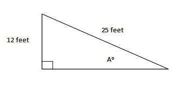{kind=link}
Find the measure of angle $A$ , when given the opposite side and hypotenuse.
From angle $A$ , the sides opposite and hypotenuse are given. Therefore, use the sine trigonometric function. (Soh from SohCahToa) Write the equation and solve using the inverse key for sine.
10.2. Trigonometric Functions and the Unit Circle
10.2.1. Radians
Radians are another way of measuring angles, and the measure of an angle can be converted between degrees and radians.
Learning Objective
Explain the definition of radians in terms of arc length of a unit circle and use this to convert between degrees and radians
Key Points
- One radian is the measure of the central angle of a circle such that the length of the arc is equal to the radius of the circle.
- A full revolution of a circle ($360^{\circ}$ ) equals $2\pi~\mathrm{radians}$ . This means that $\displaystyle{ 1\text{ radian} = \frac{180^{\circ}}{\pi} }$ . $$
- The formula used to convert between radians and degrees is $\displaystyle{ \text{angle in degrees} = \text{angle in radians} \cdot \frac{180^\circ}{\pi} }$ .
- The radian measure of an angle is the ratio of the length of the arc to the radius of the circle $\displaystyle{ \left(\theta = \frac{s}{r}\right) }$ . In other words, if $s$ is the length of an arc of a circle, and $r$ is the radius of the circle, then the central angle containing that arc measures radians.
Key Terms
- radian
- The standard unit used to measure angles in mathematics. The measure of a central angle of a circle that intercepts an arc equal in length to the radius of that circle.
- arc
- A continuous part of the circumference of a circle.
- circumference
- The length of a line that bounds a circle.
Introduction to Radians
Recall that dividing a circle into 360 parts creates the degree measurement. This is an arbitrary measurement, and we may choose other ways to divide a circle. To find another unit, think of the process of drawing a circle. Imagine that you stop before the circle is completed. The portion that you drew is referred to as an arc. An arc may be a portion of a full circle, a full circle, or more than a full circle, represented by more than one full rotation. The length of the arc around an entire circle is called the circumference of that circle.
The circumference of a circle is
If we divide both sides of this equation by $r$ , we create the ratio of the circumference, which is always $2\pi$ to the radius, regardless of the length of the radius. So the circumference of any circle is $2\pi \approx 6.28$ times the length of the radius. That means that if we took a string as long as the radius and used it to measure consecutive lengths around the circumference, there would be room for six full string-lengths and a little more than a quarter of a seventh, as shown in the diagram below.
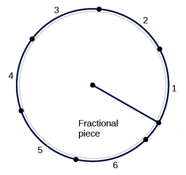{kind=link}
The circumference of a circle is a little more than 6 times the length of the radius.
This brings us to our new angle measure. The radian is the standard unit used to measure angles in mathematics. One radian is the measure of a central angle of a circle that intercepts an arc equal in length to the radius of that circle.
{kind=link}
The angle $t$ sweeps out a measure of one radian. Note that the length of the intercepted arc is the same as the length of the radius of the circle. A segment of a circle of length radius 1, shown with the angle t that is required to make a piece of the circle with that length arc. The angle t has a measure of 1 radian.
Because the total circumference of a circle equals $2\pi$ times the radius, a full circular rotation is $2\pi$ radians.

An arc of a circle with the same length as the radius of that circle corresponds to an angle of 1 radian. A full circle corresponds to an angle of $2\pi$ radians; this means that$2\pi$ radians is the same as $360^\circ$ . An animation showing increasing angles on the inside of a circle. 1, 2, and 3 radians sweep out almost the whole top half of the circle, and the whole top half of the circle requires an angle of pi radians to be swept out; this is equivalent to 180 degrees. The whole circle is then 2pi radians.
Note that when an angle is described without a specific unit, it refers to radian measure. For example, an angle measure of 3 indicates 3 radians. In fact, radian measure is dimensionless, since it is the quotient of a length (circumference) divided by a length (radius), and the length units cancel. You may sometimes see radians represented by the symbol $\text{rad}$ .
Comparing Radians to Degrees
Since we now know that the full range of a circle can be represented by either 360 degrees or $2\pi$ radians, we can conclude the following:
As stated, one radian is equal to $\displaystyle{ \frac{180^{\circ}}{\pi} }$ degrees, or just under 57.3 degrees ($57.3^{\circ}$ ). Thus, to convert from radians to degrees, we can multiply by $\displaystyle{ \frac{180^\circ}{\pi} }$ :
A unit circle is a circle with a radius of 1, and it is used to show certain common angles.
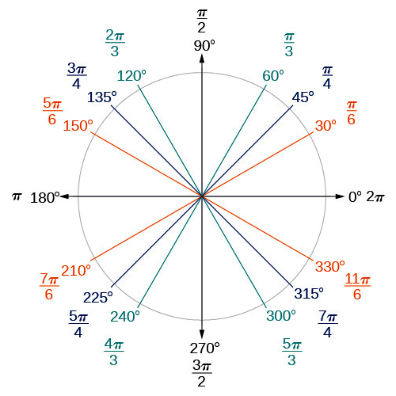{kind=link}
Commonly encountered angles measured in radians and degrees. A circle on a coordinate plane with different angles shown in degrees and radians. In the first quadrant, 30 degrees is pi/6, 45 degrees is pi/4, and 60 degrees is pi/3. 90 degrees is pi radians, then in the second quadrant 120 degrees is 2pi/3, 135 degrees is 3pi/4, and 150 degrees is 5pi/6. 180 degrees, or half the circle and halfway around the coordinate plane, is pi radians. In the third quadrant, 210 degrees is 7pi/6 radians, 225 degrees is 5pi/4 radians, and 240 degrees is 4pi/3 radians. 3/4 around the circle, 270 degrees, is 3pi/2 radians. In the fourth quadrant, 300 degrees is 5pi/3 radians, 315 degrees is 7pi/4 radians, and 330 degrees is 11pi/6 radians. The positive x axis, either 0 or 360 degrees, is 0 or 2pi radians.
Example
Convert an angle measuring $\displaystyle{ \frac{\pi}{9} }$ radians to degrees.
Substitute the angle in radians into the above formula:
Thus we have $\displaystyle{ \frac{\pi}{9} \text{ radians} = 20^{\circ} }$ .
Measuring an Angle in Radians
An arc length $s$ is the length of the curve along the arc. Just as the full circumference of a circle always has a constant ratio to the radius, the arc length produced by any given angle also has a constant relation to the radius, regardless of the length of the radius.
This ratio, called the radian measure, is the same regardless of the radius of the circle—it depends only on the angle. This property allows us to define a measure of any angle as the ratio of the arc length $s$ to the radius $r$ .
{kind=link}
(a) In an angle of 1 radian; the arc lengths equals the radius $r$ . (b) An angle of 2 radians has an arc length $s=2r$ . (c) A full revolution is $2\pi$ , or about 6.28 radians. Circles with the equivalent arc lengths and angles shown. In (c), the individual marks for 1, 2, and 3 radians are also shown.
Example
What is the measure of a given angle in radians if its arc length is $4 \pi$ , and the radius has length $$ 12?
Substitute the values $s = 4\pi$ and $r = 12$ into the angle formula:
The angle has a measure of $\displaystyle{\frac{1}{3}\pi}$ radians.
10.2.2. Defining Trigonometric Functions on the Unit Circle
Identifying points on a unit circle allows one to apply trigonometric functions to any angle.
Learning Objective
Use right triangles drawn in the unit circle to define the trigonometric functions for any angle
Key Points
- The $x$ - and $y$ -coordinates at a point on the unit circle given by an angle $t$ are defined by the functions $x = \cos t$ and $y = \sin t$ .
- Although the tangent function is not indicated by the unit circle, we can apply the formula $\displaystyle{\tan t = \frac{\sin t}{\cos t}}$ to find the tangent of any angle identified.
- Using the unit circle, we are able to apply trigonometric functions to any angle, including those greater than $90^{\circ}$ .
- The unit circle demonstrates the periodicity of trigonometric functions by showing that they result in a repeated set of values at regular intervals.
Key Terms
- periodicity
- The quality of a function with a repeated set of values at regular intervals.
- unit circle
- A circle centered at the origin with radius 1.
- quadrants
- The four quarters of a coordinate plane, formed by the
$x$ - and$y$ -axes.
Trigonometric Functions and the Unit Circle
We have already defined the trigonometric functions in terms of right triangles. In this section, we will redefine them in terms of the unit circle. Recall that a unit circle is a circle centered at the origin with radius 1. The angle $t$ (in radians) forms an arc of length $s$ .
The x- and y-axes divide the coordinate plane (and the unit circle, since it is centered at the origin) into four quarters called quadrants. We label these quadrants to mimic the direction a positive angle would sweep. The four quadrants are labeled I, II, III, and IV.
For any angle $t$ , we can label the intersection of its side and the unit circle by its coordinates, $(x, y)$ . The coordinates $x$ and $y$ will be the outputs of the trigonometric functions $f(t) = \cos t$ and $f(t) = \sin t$ , respectively. This means:
$\displaystyle{ \begin{align} x &= \cos t \\ y &= \sin t \end{align} }$
The diagram of the unit circle illustrates these coordinates.
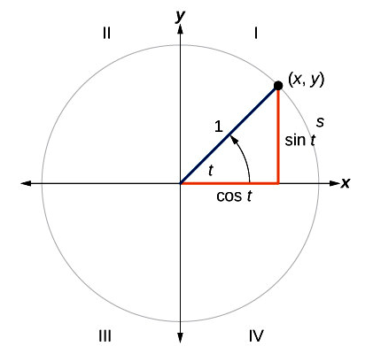{kind=link}
Coordinates of a point on a unit circle where the central angle is $t$ radians. A unit circle with the point (x, y) labeled on the circle. If x and y are the legs of the right triangle, the hypotenuse is the radius (1) of the circle.
Note that the values of $x$ and $y$ are given by the lengths of the two triangle legs that are colored red. This is a right triangle, and you can see how the lengths of these two sides (and the values of $x$ and $y$ ) are given by trigonometric functions of $t$ .
For an example of how this applies, consider the diagram showing the point with coordinates $\displaystyle{ \left(-\frac{\sqrt2}{2}, \frac{\sqrt2}{2}\right) }$ on a unit circle.
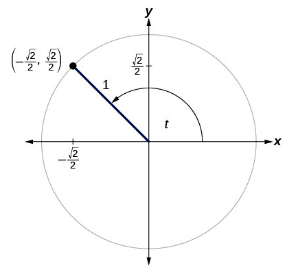{kind=link}
The point $\displaystyle{ \left(-\frac{\sqrt2}{2}, \frac{\sqrt2}{2}\right) }$ on a unit circle. The given point is on the unit circle in the second quadrant, at 135 degrees or 3pi/4 radians.
We know that, for any point on a unit circle, the $x$ -coordinate is $\cos t$ and the $y$ -coordinate is $\sin t$ . Applying this, we can identify that $\displaystyle{ \cos t = -\frac{\sqrt2}{2} }$ and $\displaystyle{\sin t = -\frac{\sqrt2}{2}}$ for the angle $t$ in the diagram.
Recall that $\displaystyle{\tan t = \frac{\sin t}{\cos t}}$ . Applying this formula, we can find the tangent of any angle identified by a unit circle as well. For the angle $t$ identified in the diagram of the unit circle showing the point $\displaystyle{ \left(-\frac{\sqrt2}{2}, \frac{\sqrt2}{2}\right) }$ , the tangent is:
We have previously discussed trigonometric functions as they apply to right triangles. This allowed us to make observations about the angles and sides of right triangles, but these observations were limited to angles with measures less than $90^{\circ}$ . Using the unit circle, we are able to apply trigonometric functions to angles greater than $90^{\circ}$ .
Further Consideration of the Unit Circle
The coordinates of certain points on the unit circle and the the measure of each angle in radians and degrees are shown in the unit circle coordinates diagram. This diagram allows one to make observations about each of these angles using trigonometric functions.
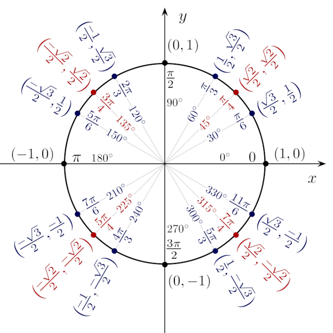{kind=link}
The unit circle, showing coordinates and angle measures of certain points. A unit circle with x and y coordinates (cosine and sine values) shown for angles that are a multiple of 30, 45, or 60 degrees. For 30 degrees or pi/6 radians, (x, y) is (root 3/2, 1/2). For 45 degrees or pi/4 radians, (x, y) is (root 2/2, root 2/2). For 60 degrees or pi/3 radians, (x, y) is (1/2, root 3/2). These values are same except for a negative sign in the other quadrants. (Any multiple of pi/4, pi/3, and pi/6 will have the same value except for sign, respectively.) In quadrants 2 and 3, x-values (cosines) are negative, and in quadrants 3 and 4, y-values (sines) are negative.
We can find the coordinates of any point on the unit circle. Given any angle $t$ , we can find the $x$ - or $y$ -coordinate at that point using $x = \text{cos } t$ and $y = \text{sin } t$ .
The unit circle demonstrates the periodicity of trigonometric functions. Periodicity refers to the way trigonometric functions result in a repeated set of values at regular intervals. Take a look at the $x$ -values of the coordinates in the unit circle above for values of $t$ from $0$ to $2{\pi}$ :
We can identify a pattern in these numbers, which fluctuate between $-1$ and $1$ . Note that this pattern will repeat for higher values of $t$ . Recall that these $x$ -values correspond to $\cos t$ . This is an indication of the periodicity of the cosine function.
Example
Solve $\displaystyle{ \sin{ \left(\frac{7\pi}{6}\right) } }$ .
It seems like this would be complicated to work out. However, notice that the unit circle diagram shows the coordinates at $\displaystyle{ t = \frac{7\pi}{6} }$ . Since the $y$ -coordinate corresponds to $\sin t$ , we can identify that
10.2.3. Special Angles
The unit circle and a set of rules can be used to recall the values of trigonometric functions of special angles.
Learning Objective
Explain how the properties of sine, cosine, and tangent and their signs in each quadrant give their values for each of the special angles
Key Points
- The trigonometric functions for the angles in the unit circle can be memorized and recalled using a set of rules.
- The sign on a trigonometric function depends on the quadrant that the angle falls in, and the mnemonic phrase “A Smart Trig Class” is used to identify which functions are positive in which quadrant.
- Reference angles in quadrant Iare used to identify which value any angle in quadrants II, III, or IV will take. A reference angle forms the same angle with the $x$ -axis as the angle in question.
- Only the sine and cosine functions for special angles are included in the unit circle. However, since tangent is derived from sine and cosine, it can be calculated for any of the special angles.
Key Term
- special angle
- An angle that is a multiple of 30 or 45 degrees; trigonometric functions are easily written at these angles.
Trigonometric Functions of Special Angles
Recall that certain angles and their coordinates, which correspond to $x = \cos t$ and $y = \sin t$ for a given angle $t$ , can be identified on the unit circle.
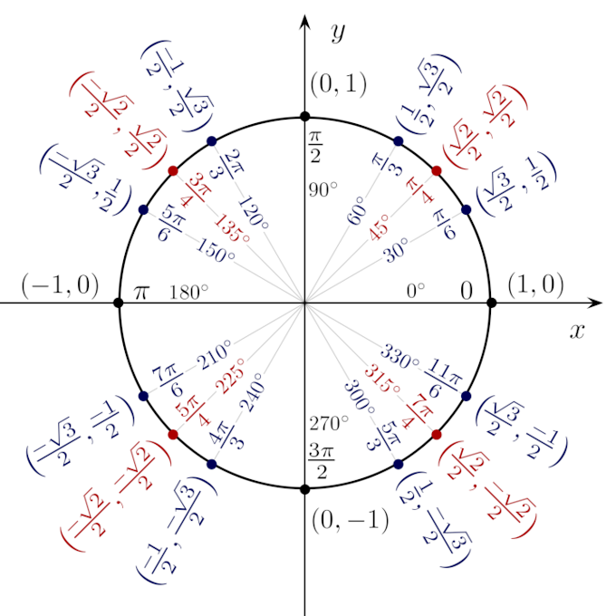{kind=link}
Special angles and their coordinates are identified on the unit circle. A unit circle with x and y coordinates (cosine and sine values) shown for angles that are a multiple of 30, 45, or 60 degrees. For 30 degrees or pi/6 radians, (x, y) is (root 3/2, 1/2). For 45 degrees or pi/4 radians, (x, y) is (root 2/2, root 2/2). For 60 degrees or pi/3 radians, (x, y) is (1/2, root 3/2). These values are same except for a negative sign in the other quadrants. (Any multiple of pi/4, pi/3, and pi/6 will have the same value except for sign, respectively.) In quadrants 2 and 3, x-values (cosines) are negative, and in quadrants 3 and 4, y-values (sines) are negative.
The angles identified on the unit circle above are called special angles; multiples of $\pi$ , $\frac{\pi}{2}$ , $$$\frac{\pi}{3}$ , $\frac{\pi}{4}$ , and $\frac{\pi}{6}$ ($180^\circ$$$ , $90^\circ$ , $60^\circ$ , $45^\circ$ , and $30^\circ$ ). These have relatively simple expressions. Such simple expressions generally do not exist for other angles. Some examples of the algebraic expressions for the sines of special angles are:
The expressions for the cosine functions of these special angles are also simple.
Note that while only sine and cosine are defined directly by the unit circle, tangent can be defined as a quotient involving these two:
Tangent functions also have simple expressions for each of the special angles.
We can observe this trend through an example. Let's find the tangent of $60^{\circ}$ .
First, we can identify from the unit circle that:
We can easily calculate the tangent:
Memorizing Trigonometric Functions
An understanding of the unit circle and the ability to quickly solve trigonometric functions for certain angles is very useful in the field of mathematics. Applying rules and shortcuts associated with the unit circle allows you to solve trigonometric functions quickly. The following are some rules to help you quickly solve such problems.
Signs of Trigonometric Functions
The sign of a trigonometric function depends on the quadrant that the angle falls in. To help remember which of the trigonometric functions are positive in each quadrant, we can use the mnemonic phrase “A Smart Trig Class.” Each of the four words in the phrase corresponds to one of the four quadrants, starting with quadrant I and rotating counterclockwise. In quadrant I, which is “A,” all of the trigonometric functions are positive. In quadrant II, “Smart,” only sine is positive. In quadrant III, “Trig,” only tangent is positive. Finally, in quadrant IV, “Class,” only cosine is positive.
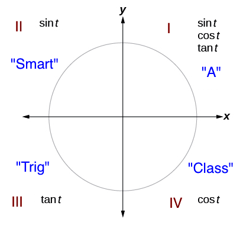{kind=link}
The trigonometric functions are each listed in the quadrants in which they are positive.
Identifying Values Using Reference Angles
Take a close look at the unit circle, and note that $\sin t$ and $\cos t$ take certain values as they fluctuate between $-1$ and $1$ . You will notice that they take on the value of zero, as well as the positive and negative values of three particular numbers: $\displaystyle{\frac{\sqrt{3}}{2}}$ , $\displaystyle{\frac{\sqrt{2}}{2}}$ , and $\displaystyle{\frac{1}{2}}$ . Identifying reference angles will help us identify a pattern in these values.
Reference angles in quadrant I are used to identify which value any angle in quadrants II, III, or IV will take. This means that we only need to memorize the sine and cosine of three angles in quadrant I: $30^{\circ}$ , $45^{\circ}$ , and $60^{\circ}$ .
For any given angle in the first quadrant, there is an angle in the second quadrant with the same sine value. Because the sine value is the $y$ -coordinate on the unit circle, the other angle with the same sine will share the same $y$ -value, but have the opposite $x$ -value. Therefore, its cosine value will be the opposite of the first angle’s cosine value.
Likewise, there will be an angle in the fourth quadrant with the same cosine as the original angle. The angle with the same cosine will share the same $x$ -value but will have the opposite $y$ -value. Therefore, its sine value will be the opposite of the original angle’s sine value.
As shown in the diagrams below, angle $\alpha$ has the same sine value as angle $t$ ; the cosine values are opposites. Angle $\beta$ has the same cosine value as angle $t$ ; the sine values are opposites.
{kind=link}
In the left figure, $t$ is the reference angle for $\alpha$ . In the right figure, $t$ is the reference angle for $\beta$ . t is an angle in the first quadrant. In the left picture, alpha is an angle in the second quadrant, 180-t degrees. It is the same distance up from the x-axis as t is, but reflected over the y-axis. In the right picture, beta is an angle in the fourth quadrant, 360-t degrees. It is the same distance to the right of the y-axis as t is, but reflected over the x-axis.
Recall that an angle’s reference angle is the acute angle, $t$ , formed by the terminal side of the angle $t$ and the horizontal axis. A reference angle is always an angle between $0$ and $90^{\circ}$ , or $0$ and $\displaystyle{\frac{\pi}{2}}$ radians. For any angle in quadrants II, III, or IV, there is a reference angle in quadrant I.
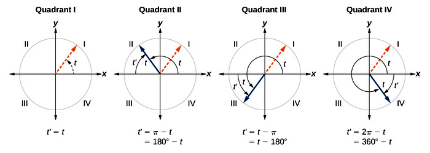{kind=link}
For any angle in quadrants II, III, or IV, there is a reference angle in quadrant I. For an angle in the first quadrant, the angle is its own reference angle. For an angle in the second quadrant, the reference angle is the angle up from the x-axis. For an angle in the third or fourth quadrants, the reference angle is the angle down from the x-axis.
Thus, in order to recall any sine or cosine of a special angle, you need to be able to identify its angle with the $x$ -axis in order to compare it to a reference angle. You will then identify and apply the appropriate sign for that trigonometric function in that quadrant.
These are the steps for finding a reference angle for any angle between $0$ and $2\pi$ :
- An angle in the first quadrant is its own reference angle.
- For an angle in the second or third quadrant, the reference angle is $|\pi - t|$ or $|180^{\circ} - t|$ .
- For an angle in the fourth quadrant, the reference angle is $2\pi - t$ or $360^{\circ} - t$ . If an angle is less than $0$ or greater than $2\pi$ , add or subtract $2\pi$ as many times as needed to find an equivalent angle between $0$ and $2\pi$ .
Since tangent functions are derived from sine and cosine, the tangent can be calculated for any of the special angles by first finding the values for sine or cosine.
Example
Find $\tan (225^{\circ})$ , applying the rules above.
First, note that $225^{\circ}$ falls in the third quadrant:
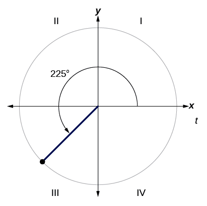{kind=link}
The angle $225^{\circ}$ falls in quadrant III.
Subtract $225^{\circ}$ from $180^{\circ}$ to identify the reference angle:
$\displaystyle{ \begin{align} \left| 180^{\circ} - 225^{\circ} \right| &= \left|-45^{\circ} \right| \\ &= 45^{\circ} \end{align} }$
In other words, $225^{\circ}$ falls $45^{\circ}$ from the $x$ -axis. The reference angle is $45^{\circ}$ .
Recall that
However, the rules described above tell us that the sine of an angle in the third quadrant is negative. So we have
Following the same process for cosine, we can identify that
We can find $\tan (225^{\circ})$ by dividing $\sin (225^{\circ})$ by $\cos (225^{\circ})$ :
$\displaystyle{ \begin{align} \tan{ \left(225^{\circ}\right)} &= \frac{\sin(225^{\circ})}{\cos (225^{\circ})} \\ &= \frac{-\frac{\sqrt{2}}{2}}{-\frac{\sqrt{2}}{2}} \\ &= -\frac{\sqrt{2}}{2} \cdot -\frac{2}{\sqrt{2}} \\ &= 1 \end{align} }$
10.2.4. Sine and Cosine as Functions
The functions sine and cosine can be graphed using values from the unit circle, and certain characteristics can be observed in both graphs.
Learning Objective
Describe the characteristics of the graphs of sine and cosine
Key Points
- Both the sine function $(y = \sin x)$ and cosine function $(y = \cos x)$ can be graphed by plotting points derived from the unit circle, with each $x$ -coordinate being an angle in radians and the $y$ -coordinate being the corresponding value of the function at that angle.
- Sine and cosine are periodic functions with a period of $2\pi$ .
- Both sine and cosine have a domain of $(-\infty, \infty)$ and a range of $[-1, 1]$ .
- The graph of $y = \sin x$ is symmetric about the origin because it is an odd function, while the graph of $y = \cos x$ is symmetric about the $y$ -axis because it is an even function.
Key Terms
- periodic function
- A continuous set of
$\left(x,f(x)\right)$ points that repeats at regular intervals. - odd function
- A continuous set of
$\left(x, f(x)\right)$ points in which$f(-x) = -f(x)$ , with symmetry about the origin. - even function
- A continuous set of
$\left(x,f(x)\right)$ points in which$f(-x) = f(x)$ , with symmetry about the$y$ -axis. - period
- An interval containing values that occur repeatedly in a function.
Graphing Sine and Cosine Functions
Recall that the sine and cosine functions relate real number values to the $x$ - and $y$ -coordinates of a point on the unit circle. So what do they look like on a graph on a coordinate plane? Let’s start with the sine function, $y = \sin x$ . We can create a table of values and use them to sketch a graph. Below are some of the values for the sine function on a unit circle, with the $x$ -coordinate being the angle in radians and the $y$ -coordinate being $\sin x$ :
Plotting the points from the table and continuing along the $x$ -axis gives the shape of the sine function.
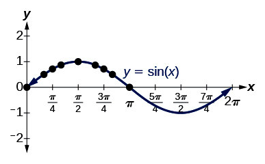{kind=link}
Graph of points with $x$ coordinates being angles in radians, and $y$ coordinates being the function $\sin x$ .
Notice how the sine values are positive between $0$ and $\pi$ , which correspond to the values of the sine function in quadrants I and II on the unit circle, and the sine values are negative between $\pi$ and $2\pi$ , which correspond to the values of the sine function in quadrants III and IV on the unit circle.
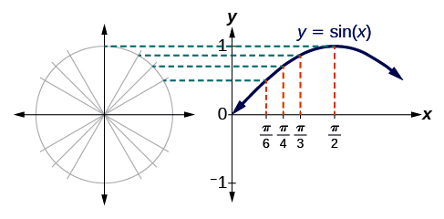{kind=link}
The points on the curve $y = \sin x$ correspond to the values of the sine function on the unit circle.
Now let’s take a similar look at the cosine function, $f(x) = \sin x$ . Again, we can create a table of values and use them to sketch a graph. Below are some of the values for the sine function on a unit circle, with the $x$ -coordinate being the angle in radians and the $y$ -coordinate being $\cos x$ :
As with the sine function, we can plots points to create a graph of the cosine function.
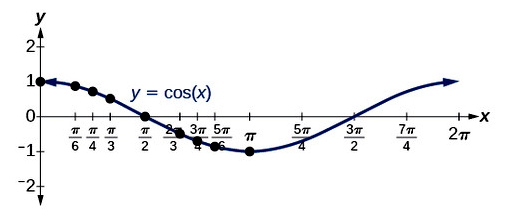{kind=link}
The points on the curve $y = \cos x$ correspond to the values of the cosine function on the unit circle.
Because we can evaluate the sine and cosine of any real number, both of these functions are defined for all real numbers. By thinking of the sine and cosine values as coordinates of points on a unit circle, it becomes clear that the range of both functions must be the interval $\left[-1, 1 \right]$ .
Identifying Periodic Functions
In the graphs for both sine and cosine functions, the shape of the graph repeats after $2\pi$ , which means the functions are periodic with a period of $2\pi$ . A periodic function is a function with a repeated set of values at regular intervals. Specifically, it is a function for which a specific horizontal shift, $P$ , results in a function equal to the original function:
$f(x + P) = f(x)$
for all values of $x$ in the domain of $f$ . When this occurs, we call the smallest such horizontal shift with $P>0$ the period of the function. The diagram below shows several periods of the sine and cosine functions.
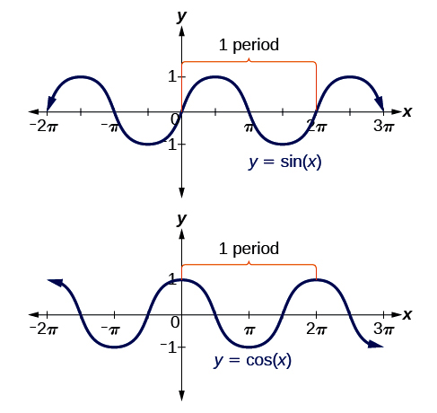{kind=link}
The sine and cosine functions are periodic, meaning that a specific horizontal shift, $P$ , results in a function equal to the original function:$f(x + P) = f(x)$ .
Even and Odd Functions
Looking again at the sine and cosine functions on a domain centered at the $y$ -axis helps reveal symmetries. As we can see in the graph of the sine function, it is symmetric about the origin, which indicates that it is an odd function. All along the graph, any two points with opposite $x$ values also have opposite $y$ values. This is characteristic of an odd function: two inputs that are opposites have outputs that are also opposites. In other words, if $\sin (-x) = - \sin x$ .
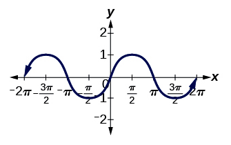{kind=link}
The sine function is odd, meaning it is symmetric about the origin.
The graph of the cosine function shows that it is symmetric about the y-axis. This indicates that it is an even function. For even functions, any two points with opposite $x$ -values have the same function value. In other words, $\cos (-x) = \cos x$ . We can see from the graph that this is true by comparing the $y$ -values of the graph at any opposite values of $x$ .
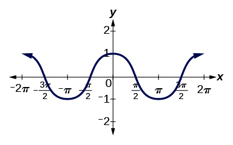{kind=link}
The cosine function is even, meaning it is symmetric about the $y$ -axis.
10.2.5. Tangent as a Function
Characteristics of the tangent function can be observed in its graph.
Learning Objective
Describe the characteristics of the graph of the tangent function
Key Points
- The tangent function is undefined at any value of $x$ where $\cos x = 0$ , and its graph has vertical asymptotes at these $x$ values.
- Tangent is a periodic function with a period of $\pi$ .
- The graph of the tangent function is symmetric around the origin, and thus is an odd function.
Key Terms
- odd function
- An continuous set of
$\left(x, f(x)\right)$ points in which$f(-x) = -f(x)$ , and there is symmetry about the origin. - period
- An interval containing the minimum set of values that repeat in a periodic function.
- periodic function
- A continuous set of
$\left(x, f(x)\right)$ points with a set of values that repeats at regular intervals. - vertical asymptote
- A straight line parallel to the
$y$ axis that a curve approaches arbitrarily closely as the curve goes to infinity.
Graphing the Tangent Function
The tangent function can be graphed by plotting $\left(x,f(x)\right)$ points. The shape of the function can be created by finding the values of the tangent at special angles. However, it is not possible to find the tangent functions for these special angles with the unit circle. We apply the formula, $\displaystyle{ \tan x = \frac{\sin x}{\cos x} }$ to determine the tangent for each value.
We can analyze the graphical behavior of the tangent function by looking at values for some of the special angles. Consider the points below, for which the $x$ -coordinates are angles in radians, and the $y$ -coordinates are $\tan x$ :
Notice that $\tan x$ is undefined at $\displaystyle{x = -\frac{\pi}{2}}$ and $\displaystyle{x = \frac{\pi}{2}}$ . The above points will help us draw our graph, but we need to determine how the graph behaves where it is undefined. Let's consider the last four points. We can identify that the values of $y$ are increasing as $x$ increases and approaches $\displaystyle{\frac{\pi}{2}}$ . We could consider additional points between $\displaystyle{x=0}$ and $\displaystyle{x = \frac{\pi}{2}}$ , and we would see that this holds. Likewise, we can see that $y$ decreases as $x$ approaches $\displaystyle{-\frac{\pi}{2}}$ , because the outputs get smaller and smaller.
Recall that there are multiple values of $x$ that can give $\cos x = 0$ . At any such point, $\tan x$ is undefined because $\displaystyle{\tan x = \frac{\sin x}{\cos x}}$ . At values where the tangent function is undefined, there are discontinuities in its graph. At these values, the graph of the tangent has vertical asymptotes.
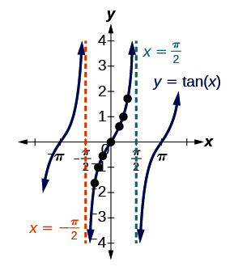{kind=link}
The tangent function has vertical asymptotes at $\displaystyle{x = \frac{\pi}{2}}$ and $\displaystyle{x = -\frac{\pi}{2}}$ .
Characteristics of the Graph of the Tangent Function
As with the sine and cosine functions, tangent is a periodic function. This means that its values repeat at regular intervals. The period of the tangent function is $\pi$ because the graph repeats itself on $x$ -axis intervals of $k\pi$ , where $k$ is a constant. In the graph of the tangent function on the interval $\displaystyle{-\frac{\pi}{2}}$ to $\displaystyle{\frac{\pi}{2}}$ , we can see the behavior of the graph over one complete cycle of the function. If we look at any larger interval, we will see that the characteristics of the graph repeat.
The graph of the tangent function is symmetric around the origin, and thus is an odd function. In other words, $\text{tan}(-x) = - \text{tan } x$ for any value of $x$ . Any two points with opposite values of $x$ produce opposite values of $y$ . We can see that this is true by considering the $y$ values of the graph at any opposite values of $x$ . Consider $\displaystyle{x=\frac{\pi}{3}}$ and $\displaystyle{x=-\frac{\pi}{3}}$ . We already determined above that $\displaystyle{\tan (\frac{\pi}{3}) = \sqrt{3}}$ , and $\displaystyle{\tan (-\frac{\pi}{3}) = -\sqrt{3}}$ .
10.2.6. Secant and the Trigonometric Cofunctions
Trigonometric functions have reciprocals that can be calculated using the unit circle.
Learning Objective
Calculate values for the trigonometric functions that are the reciprocals of sine, cosine, and tangent
Key Points
- The secant function is the reciprocal of the cosine function $\displaystyle{\left(\sec x = \frac{1}{\cos x}\right)}$ . It can be found for an angle $t$ by using the $x$ -coordinate of the associated point on the unit circle: $\displaystyle{\sec t = \frac{1}{x}}$ .
- The cosecant function is the reciprocal of the sine function $\displaystyle{\left(\csc x = \frac{1}{\sin x}\right)}$ . It can be found for an angle $t$ by using the $y$ -coordinate of the associated point on the unit circle: $\displaystyle{\csc t = \frac{1}{y}}$ .
- The cotangent function is the reciprocal of the tangent function $\displaystyle{\left(\cot x = \frac{1}{\tan x} = \frac{\cos t}{\sin t}\right)}$ . It can be found for an angle by using the $x$ - and $y$ -coordinates of the associated point on the unit circle: $\displaystyle{\cot t = \frac{\cos t}{\sin t} = \frac{x}{y}}$ .
Key Terms
- cotangent
- The reciprocal of the tangent function
- cosecant
- The reciprocal of the sine function
- secant
- The reciprocal of the cosine function
Introduction to Reciprocal Functions
We have discussed three trigonometric functions: sine, cosine, and tangent. Each of these functions has a reciprocal function, which is defined by the reciprocal of the ratio for the original trigonometric function. Note that reciprocal functions differ from inverse functions. Inverse functions are a way of working backwards, or determining an angle given a trigonometric ratio; they involve working with the same ratios as the original function.
The three reciprocal functions are described below.
Secant
The secant function is the reciprocal of the cosine function, and is abbreviated as $\sec$ . It can be described as the ratio of the length of the hypotenuse to the length of the adjacent side in a triangle.
It is easy to calculate secant with values in the unit circle. Recall that for any point on the circle, the $x$ -value gives $\cos t$ for the associated angle $t$ . Therefore, the secant function for that angle is
Cosecant
The cosecant function is the reciprocal of the sine function, and is abbreviated as$\csc$ . It can be described as the ratio of the length of the hypotenuse to the length of the opposite side in a triangle.
As with secant, cosecant can be calculated with values in the unit circle. Recall that for any point on the circle, the $y$ -value gives $\sin t$ . Therefore, the cosecant function for the same angle is
Cotangent
The cotangent function is the reciprocal of the tangent function, and is abbreviated as $\cot$ . It can be described as the ratio of the length of the adjacent side to the length of the hypotenuse in a triangle.
Also note that because $\displaystyle{\tan x = \frac{\sin x}{\cos x}}$ , its reciprocal is
Cotangent can also be calculated with values in the unit circle. Applying the $x$ - and $y$ -coordinates associated with angle $t$ , we have
Calculating Reciprocal Functions
We now recognize six trigonometric functions that can be calculated using values in the unit circle. Recall that we used values for the sine and cosine functions to calculate the tangent function. We will follow a similar process for the reciprocal functions, referencing the values in the unit circle for our calculations.
For example, let's find the value of $\sec{\left(\frac{\pi}{3}\right)}$ .
Applying $\displaystyle{\sec x = \frac{1}{\cos x}}$ , we can rewrite this as:
From the unit circle, we know that $\displaystyle{\cos{\left({\frac{\pi}{3}}\right)}= \frac{1}{2}}$ . Using this, the value of $\displaystyle{ \sec{\left(\frac{\pi}{3}\right)}}$ can be found:
The other reciprocal functions can be solved in a similar manner.
Example
Use the unit circle to calculate $\sec t$ , $\cot t$ , and $\csc t$ at the point $\displaystyle{\left(-\frac{\sqrt{3}}{2}, \frac{1}{2}\right)}$ .
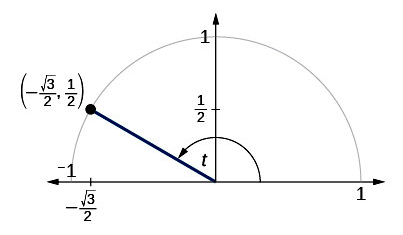{kind=link}
The point $\displaystyle{\left(-\frac{\sqrt{3}}{2}, \frac{1}{2}\right)}$ , shown on a unit circle.
Because we know the $(x, y)$ coordinates of the point on the unit circle indicated by angle $t$ , we can use those coordinates to find the three functions.
Recall that the $x$ -coordinate gives the value for the cosine function, and the $y$ -coordinate gives the value for the sine function. In other words:
and
Using this information, the values for the reciprocal functions at angle $t$ can be calculated:
10.2.7. Inverse Trigonometric Functions
Each trigonometric function has an inverse function that can be graphed.
Learning Objective
Describe the characteristics of the graphs of the inverse trigonometric functions, noting their domain and range restrictions
Key Points
- The inverse function of sine is arcsine, which has a domain of $\displaystyle{\left[-\frac{\pi}{2}, \frac{\pi}{2}\right]}$ . In other words, for angles in the interval $\displaystyle{\left[-\frac{\pi}{2}, \frac{\pi}{2}\right]}$ , if $y = \sin x$ , then $\arcsin x = \sin^{-1} x=y$ .
- The inverse function of cosine is arccosine, which has a domain of $\left[0, \pi\right]$ . In other words, for angles in the interval $\left[0, \pi\right]$ , if $y = \cos x$ , then $\arccos x = \cos^{-1} x=y$ .
- The inverse function of tangent is arctangent, which has a domain of $\left(-\frac{\pi}{2}, \frac{\pi}{2}\right)$ . In other words, for angles in the interval $\left(-\frac{\pi}{2}, \frac{\pi}{2}\right)$ , if $y = \tan x$ , then $\arctan x = \tan^{-1} x=y$ .
Key Terms
- inverse function
- A function that does exactly the opposite of another. Notation:
$f^{-1}$ - one-to-one function
- A function that never maps distinct elements of its domain to the same element of its range.
Introduction to Inverse Trigonometric Functions
Inverse trigonometric functions are used to find angles of a triangle if we are given the lengths of the sides. Inverse trigonometric functions can be used to determine what angle would yield a specific sine, cosine, or tangent value.
To use inverse trigonometric functions, we need to understand that an inverse trigonometric function “undoes” what the original trigonometric function “does,” as is the case with any other function and its inverse.
The inverse of sine is arcsine (denoted $\arcsin$ ), the inverse of cosine is arccosine (denoted $\arccos$ ), and the inverse of tangent is arctangent (denoted $\arctan$ ).
Note that the domain of the inverse function is the range of the original function, and vice versa. An exponent of $-1$ is used to indicate an inverse function. For example, if $f(x) = \sin x$ ,then we would write $f^{-1}(x) = \sin^{-1} x$ . Be aware that $\sin^{-1} x$ does not mean $\displaystyle{\frac{1}{\sin x}}$ . The reciprocal function is $\displaystyle{\frac{1}{\sin x}}$ , which is not the same as the inverse function.
For a one-to-one function, if $f(a) = b$ , then an inverse function would satisfy $f^{-1}(b) = a$ . However, the sine, cosine, and tangent functions are not one-to-one functions. The graph of each function would fail the horizontal line test. In fact, no periodic function can be one-to-one because each output in its range corresponds to at least one input in every period, and there are an infinite number of periods. As with other functions that are not one-to-one, we will need to restrict the domain of each function to yield a new function that is one-to-one. We choose a domain for each function that includes the number $0$ .
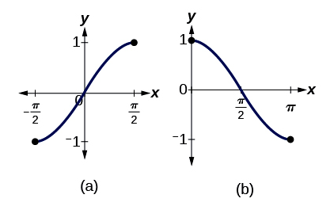{kind=link}
(a) The sine function shown on a restricted domain of $\left[-\frac{\pi}{2}, \frac{\pi}{2}\right]$ ; (b) The cosine function shown on a restricted domain of $\left[0, \pi\right]$ .
The graph of the sine function is limited to a domain of $[-\frac{\pi}{2}, \frac{\pi}{2}]$ , and the graph of the cosine function limited is to $[0, \pi]$ . The graph of the tangent function is limited to $\left(-\frac{\pi}{2}, \frac{\pi}{2}\right)$ .
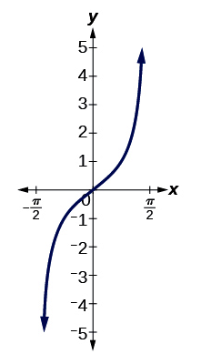{kind=link}
The tangent function shown on a restricted domain of $\left(-\frac{\pi}{2}, \frac{\pi}{2}\right)$ .
These choices for the restricted domains are somewhat arbitrary, but they have important, helpful characteristics. Each domain includes the origin and some positive values, and most importantly, each results in a one-to-one function that is invertible. The conventional choice for the restricted domain of the tangent function also has the useful property that it extends from one vertical asymptote to the next, instead of being divided into pieces by an asymptote.
Definitions of Inverse Trigonometric Functions
We can define the inverse trigonometric functions as follows. Note the domain and range of each function.
The inverse sine function $y = \sin^{-1}x $ means $x = \sin y$ . The inverse sine function can also be written $\arcsin x$ .
The inverse cosine function $y = \cos^{-1}x $ means $x = \cos y$ . The inverse cosine function can also be written $\arccos x$ .
The inverse tangent function $y = \tan^{-1}x$ means $x = \tan y$ . The inverse tangent function can also be written $\arctan x$ .
Graphs of Inverse Trigonometric Functions
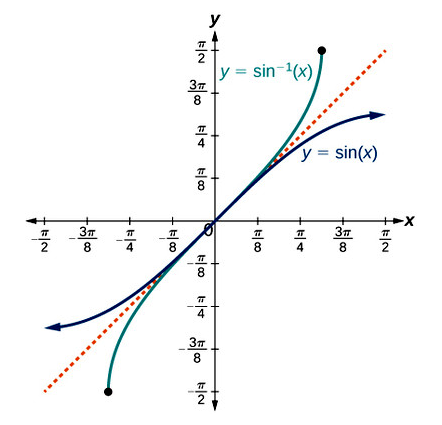{kind=link}
The arcsine function is a reflection of the sine function about the line $y = x$ .
To find the domain and range of inverse trigonometric functions, we switch the domain and range of the original functions.
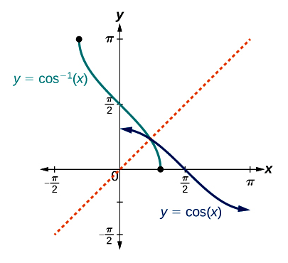{kind=link}
The arccosine function is a reflection of the cosine function about the line $y = x$ .
Each graph of the inverse trigonometric function is a reflection of the graph of the original function about the line $y = x$ .
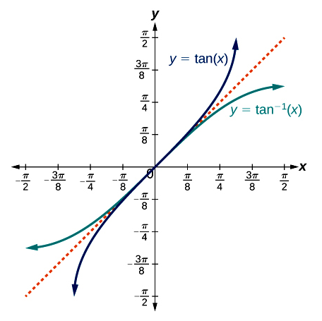{kind=link}
The arctangent function is a reflection of the tangent function about the line $y = x$ .
Summary
In summary, we can state the following relations:
- For angles in the interval $\displaystyle{\left[-\frac{\pi}{2}, \frac{\pi}{2}\right]}$ , if $\sin y = x$ , then $\sin^{-1} x=y$ .
- For angles in the interval $\displaystyle{\left[0, \pi\right]}$ , if $\cos y = x$ , then $\cos^{-1} x = y$ .
- For angles in the interval $\displaystyle{\left(-\frac{\pi}{2}, \frac{\pi}{2}\right)}$ , if $\tan y = x$ , then $\tan^{-1}x = y$ .
10.3. Trigonometric Identities
10.3.1. The Law of Sines
The law of sines can be used to find unknown angles and sides in any triangle.
Learning Objective
Use the law of sines to solve problems with triangles of any configuration, as well as to transform trigonometric expressions
Key Points
- The law of sines is used to find the measurements of all three angles and all three sides in a triangle.
- The law of sines states that the following proportions are equal: $\displaystyle{\frac{ \sin \alpha}{a} = \frac{ \sin \beta}{b} = \frac{ \sin \gamma}{c}}$ , where $\alpha, \beta,$ and $\gamma$ are angles and $a$ , $b$ , and $c$ are the lengths of the sides opposite them, respectively.
- Any pair of applicable ratios from the law of sines formula can be used to solve for an unknown angle or side length in any triangle.
Key Term
- oblique triangle
- A three-sided shape that does not contain a
$90^{\circ}$ angle.
Solving Triangles Using The Law of Sines
Previous concepts explained how to use trigonometry to find the measures of the angles and sides of right triangles. We will now discuss the law of sines, which allows us to solve for the angles and side lengths of any triangle. A right triangle contains a $90^{\circ}$ angle, while any other triangle is an oblique triangle. Solving an oblique triangle means finding the measurements of all three angles and all three sides.
The law of sines states that:
where $\alpha, \beta,$ and $\gamma$ are angles and $a$ , $b$ , and $c$ are the lengths of the sides opposite them, respectively.
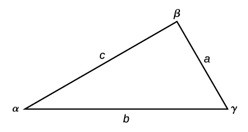{kind=link}
The sides of this oblique triangle are labeled a, b, and c, and the angles corresponding to them are labeled $\alpha$ , $\beta$ , and $\gamma$ .
Note the standard way of labeling triangles: angle $\alpha$ (alpha) is opposite side $a$ ; angle $\beta$ (beta) is opposite side $b$ ; and angle $\gamma$ (gamma) is opposite side $c$ .
To solve an oblique triangle, use any pair of applicable ratios from the law of sines formula. While calculating angles and sides, be sure to carry the exact values through to the final answer.
Example
Solve the triangle shown in the figure, with final answers rounded to the nearest tenth.
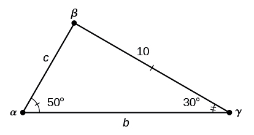{kind=link}
In this triangle, $\alpha = 50\degree$ , $\gamma = 30\degree$ , and $a=10$ . The angle $\beta$ (corresponding to side $b$ ) and the side-lengths $b$ and $c$ (corresponding to angles $\beta$ and $\gamma$ , respectively) are unknown.
First, notice that two of the three angles are already identified. We can subtract these from $180^{\circ}$ to find the measure of angle $\beta$ :
To find an unknown side, we need to know the corresponding angle and a known ratio. We know that angle $\alpha = 50^{\circ}$ and its corresponding side is $a = 10$ . Let's find the length of side $c$ , which corresponds to angle $\gamma = 30^{\circ}$ . We can use the following proportion from the law of sines:
Multiply both sides by $c$ :
Multiply by the reciprocal of $\displaystyle{\frac{\sin{\left(50^{\circ}\right)}}{10}}$ to isolate $c$ :
Solving this with a calculator, we obtain:
The last unknown side is $b$ , and we will follow a similar process for this. Set up another proportion:
Solve for $b$ :
Therefore, the complete set of sides and angles is:
10.3.2. The Law of Cosines
The law of cosines can be used to solve for angles and sides of a triangle in cases where other laws do not apply.
Learning Objective
Use the law of cosines to solve problems with triangles of any configuration, as well as to transform trigonometric expressions
Key Points
- The law of cosines can be used to find the measurements of angles and sides of a triangle in cases where the law of sines cannot be applied, such as for triangles with no known angles.
- The law of cosines states that the square of any side of a triangle is equal to the sum of the squares of the other two sides minus twice the product of the other two sides and the cosine of the included angle (for example, $a^2 = b^2 + c^2 - 2bc\cos\alpha $ ).
- The law of cosines has noted similarities to the Pythagorean theorem, from which it is derived.
Key Term
- Pythagorean theorem
- A fundamental relation among the sides of a right triangle, which states that
$a^2 + b^2 = c^2$ where$c$ is the hypotenuse, and$a$ and$b$ are the lengths of the other two sides.
Using The Law of Cosines
In some cases, we may not have enough information to apply the Law of Sines to find unknown angles and sides in a triangle. For example, consider a triangle where all three sides are known, but no angle values are known. In such cases, there is not enough information to use the Law of Sines. The Law of Cosines is useful for: 1) computing the third side of a triangle when two sides and their enclosed angle are known, and 2) computing the angles of a triangle if only the three sides are known.
The Law of Cosines defines the relationship among angle measurements and side lengths in oblique triangles. Three formulas make up the Law of Cosines. At first glance, the formulas may appear complicated because they include many variables. However, once the pattern is understood, the Law of Cosines is easier to work with than many formulas at this mathematical level.
The Law of Cosines states that the square of any side of a triangle is equal to the sum of the squares of the other two sides minus twice the product of the other two sides and the cosine of the included angle. For triangles labeled with angles $\alpha$ , $\beta$ , and $\gamma$ , and opposite corresponding sides $a$ , $b$ , and $c$ , respectively, the Law of Cosines is given as three equations:
{kind=link}
An oblique triangle, with angles $\alpha$ , $\beta$ , and $\gamma$ , and opposite corresponding sides $a$ , $b$ , and $c$ .
To solve for a missing side measurement, the corresponding opposite angle measure is needed. When solving for an angle, the lengths of all of the sides are needed. Notice that each formula for the Law of Cosines can be rearranged to solve for the angle. For example, to solve for the angle $\alpha$ , the first formula can be rewritten as:
The Law of Cosines is a more general form of the Pythagorean theorem, which holds only for right triangles. Notice that if any angle $\theta$ in the triangle is a right angle (of measure $90^{\circ}$ ), then $\cos \theta = 0$ , and the last term in the Law of Cosines cancels. Thus, for right triangles, the Law of Cosines reduces to the Pythagorean theorem:
$c^{2}=a^{2}+b^{2}$
Example
Find the length of the unknown side $b$ of the triangle in the figure shown, and round the value to the nearest tenth.
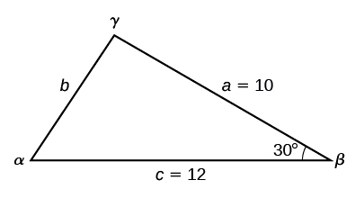{kind=link}
This oblique triangle has known side lengths $a=10$ and $c=12$ , and known angle $\beta = 30^{\circ}$ . Angle beta is between sides a and c. The other two angles and the side length b are unknown.
First, make note of what is given: two sides and the angle between them. This is not enough information to solve the problem using the Law of Sines, but we have the information needed to apply the Law of Cosines.
We can use the Law of Cosines to solve for side $b$ , since we know the measurement of the opposite angle $\beta$ . The appropriate formula is:
Substitute the values of $a$ , $c$ , and $\beta$ from the given triangle:
From the unit circle, we find that $\displaystyle{\cos{\left(30^{\circ}\right)} = \frac{\sqrt{3}}{2}}$ . Substitute this into the formula and evaluate:
Note that we now have enough information that we could use the Law of Sines to solve for the unknown angles $\alpha$ and $\gamma$ in the triangle.
10.3.3. Pythagorean Identities
The Pythagorean identities are useful in simplifying expressions with trigonometric functions.
Learning Objective
Connect the trigonometric functions to the Pythagorean Theorem in order to derive the Pythagorean identities
Key Points
- The Pythagorean identities are derived from the Pythagorean theorem, and describe the relationship between sine and cosine on the unit circle.
- The three identities are $\cos^2 t + \sin^2 t = 1$ , $1 + \tan^2 t = \sec^2 t$ , and $1 + \cot^2 t = \csc^2 t$ .
- The Pythagorean identities can be used to simplify problems by transforming trigonometric expressions, or writing them in terms of other trigonometric functions.
Deriving the Pythagorean Identities
Using the definitions of sine and cosine, we will learn how they relate to each other and the unit circle. For any point on the unit circle,
$x^2 + y^2 = 1$
We can see how this relates to the Pythagorean theorem,
For a triangle drawn inside a unit circle, the length of the hypotenuse of the triangle is equal to the radius of the circle, which is $1$ . The lengths of the sides of the triangle are $x$ and $y$ .
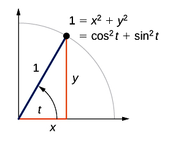{kind=link}
For a triangle drawn inside a unit circle, the length of the hypotenuse is equal to the radius of the circle. The triangle sides have lengths $x$ and $y$ .
Because $x = \cos t$ and $y= \sin t$ on the unit circle, we can substitute for $x$ and $y$ to get the Pythagorean identity:
$\cos^2 t + \sin^2 t = 1$
which is true for any real number $t$ .
We can use the Pythagorean identity to find the cosine of an angle if we know the sine, or vice versa. However, because the equation yields two solutions, we need additional knowledge of the angle to choose the solution with the correct sign. If we know the quadrant where the angle is, we can easily choose the correct solution.
Additional identities can be derived from the Pythagorean identity $\cos^2 t + \sin^2 t = 1$ . For example, if we divide the identity by $\cos^2 t$ , we have the following identity:
Likewise, if we divide the identity $\cos^2 t + \sin^2 t = 1$ by $\sin^2 t$ , we have the following:
These equations are also called Pythagorean trigonometric identities.
Summary
We have derived three Pythagorean identities:
Applications
The Pythagorean identities can be used to simplify problems by transforming trigonometric expressions. In expressions with multiple trigonometric functions, the Pythagorean identities can be used to substitute and simplify the expression.
For example, consider the following:
Let's try to simplify this. We know that cosecant is the reciprocal function of sine. In other words, we can say
We can also recognize that $\sin^2 t = 1 - \cos^2 t $ , which is simply the Pythagorean identity rearranged.
Therefore, we can rewrite the expression in terms of sine:
The sine functions cancel and this simplifies to $1$ , so we have:
$\displaystyle{ \begin{align} \left(1 - \cos^2 t\right) \csc^2 t &= \left(\sin^2 t\right)\left(\frac{1}{\sin^2 t}\right) \\ &= 1 \end{align} }$
When simplifying expressions with trigonometric functions, it is helpful to look for ways to use the Pythagorean identities to cancel terms. The problem below provides another helpful example.
Example
Simplify the following expression: $5\sin^2 t + \sec^2 t + 5\cos^2 t - 1 - \tan^2 t$
This looks like a very complicated problem, but let's look for things we can cancel. First, notice that we have both $\sin^2 t$$$ and $\cos^2 t$ , and group them together:
We can factor out the $5$ :
We can now substitute $1$ for $\sin^2 t + \cos^2 t$ , applying the Pythagorean identity:
Look at the remaining terms in the expression. Recall that one of the Pythagorean identities states $1 + \tan^2 t = \sec^2 t$ . This can be rearranged to $\sec^2 x - 1 = \tan^2 x$ . Substituting this into the expression, we have:
The expression $5\sin^2 t + \sec^2 t + 5\cos^2 t - 1 - \tan^2 t$ simplifies to $5$ .
10.3.4. Angle Addition and Subtraction Formulae
Trigonometric expressions can be simplified using special angles and a set of formulae for adding and subtracting angles.
Learning Objective
Simplify trigonometric expressions using the angle addition and subtraction formulae
Key Points
- The formulae for addition and subtraction of angles in trigonometric expressions allow us to find the sine, cosine, or tangent of a given angle if we can break it up into the sum or difference of two of the special angles.
- The formulae for cosine are: $\cos(\alpha + \beta) = \cos \alpha \cos \beta - \sin \alpha \sin \beta$ and $\cos(\alpha - \beta) = \cos \alpha \cos \beta + \sin \alpha \sin \beta$ .
- The formulae for sine are: $\sin(\alpha + \beta) = \sin \alpha \cos \beta + \cos \alpha \sin \beta$ and $\sin(\alpha - \beta) = \sin \alpha \cos \beta - \cos \alpha \sin \beta$ .
- The formulae for tangent are: $\displaystyle{\tan(\alpha + \beta) = \frac{ \tan \alpha + \tan \beta}{1 - \tan \alpha \tan \beta}}$ and $\displaystyle{\tan(\alpha - \beta) = \frac{ \tan \alpha - \tan \beta}{1 + \tan \alpha \tan \beta}}$ .
Key Term
- distance formula
- An equation to find the length of the line between two points on the
$xy$ -plane. The length of the line between$\left(x_{1}, y_{1}\right)$ and$\left(x_{2}, y_{2}\right)$ is given by:$d = \sqrt{\left(x_{2}-x_{1}\right)^2 + \left(y_{2}-y_{1}\right)^2}$ .
Deriving the Angle Addition and Subtraction Formulae
Finding the exact value of the sine, cosine, or tangent of an angle is often easier if we can rewrite the given angle in terms of two angles that have known trigonometric values. We can use the special angles, which we can review in the unit circle shown below.
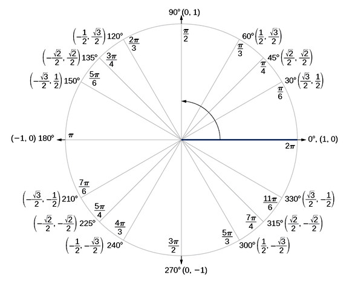{kind=link}
The unit circle with the values for sine and cosine displayed for special angles.
There are formulae for the addition and subtraction of angles within each of the trigonometric functions. These allow us to find the trigonometric function of a given angle if we can break it up into the sum or difference of two of the special angles.
To see how these formulae are derived, we can place points on a diagram of a unit circle. Suppose that the angle we want to find a trigonometric function for is the one formed by the point $A$ , which measures an angle $\alpha - \beta$ . The angle formed by $A$ and a point $B$ on the positive $x$ -axis is the same as the angle formed between two special angles, which are denoted by $P$ and $Q$ . Point $P$ is at an angle $\alpha$ from the positive $x$-axis with coordinates $(\cos \alpha, \sin \alpha)$ , and point $Q$ is at an angle of $\beta$ from the positive $x$-axis with coordinates $(\cos \beta, \sin \beta)$ . The angles are equal, and so the distance between points $P$ and $Q$ is the same as between points $A$ and $B$ .
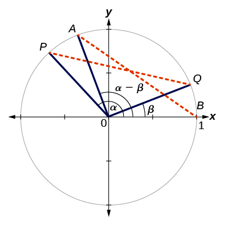{kind=link}
The formulae for adding and subtracting angles are derived from the relationships between angles on the unit circle.
Using the equivalence of these distances and the distance formula:
$d = \sqrt{\left(x_{2}-x_{1}\right)^2 + \left(y_{2}-y_{1}\right)^2}$
it is possible to derive a number of relationships between the angles. We can derive the following six formulae.
The formulae for cosine are:
The formulae for sine are:
The formulae for tangent are:
$$ These are useful for finding angles that can be derived by adding or subtracting special angles. For example, consider the angle $75^{\circ}$ , which is the sum of two special angles: $30^{\circ}$ and $45^{\circ}$ . The trigonometric functions of any such angle can be found.
Example
Using the formula for the cosine of the difference of two angles, find the exact value of $\displaystyle{\cos{\left(\frac{5\pi}{4} - \frac{\pi}{6}\right)} }$ .
Apply the formula $\cos(\alpha - \beta) = \cos \alpha \cos \beta + \sin \alpha \sin \beta$ :
Substitute the values of the trigonometric functions from the unit circle:
Simplify:
Example
Find the exact value of $\sin(15^{\circ})$ .
First, notice that $15^{\circ}$ is the difference of two special angles: $45^{\circ} - 30^{\circ} = 15^{\circ}$ . We can thus apply the formula for sine of the difference of two angles: $\sin(\alpha - \beta) = \sin \alpha \cos \beta - \cos \alpha \sin \beta$ .
Substitute $\alpha = 45^{\circ}$ and $\beta = 30^{\circ}$ into the formula:
Substitute the values of the trigonometric functions from the unit circle:
Simplify:
Thus, we have:
10.3.5. Double and Half Angle Formulae
Trigonometric expressions can be simplified by applying the double- and half-angle formulae.
Learning Objective
Simplify trigonometric expressions using the double and half angle formulae
Key Points
- The double-angle formulae are a special case of the sum formulae, where $\alpha = \beta$ . They are useful when we want to find the trigonometric function of an angle that is double a special angle.
- The half-angle formulae are also a special case, and are useful when we want to find the trigonometric function of an angle $\theta$ which is half of a special angle $\alpha$ (in other words, $\displaystyle{\theta = \frac{\alpha}{2}}$ ).
- Although each half-angle formula has a $\pm$ sign, the sign that is applied in each case depends on the quadrant the angle falls in and the rules for applying signs to trigonometric functions.
Double-Angle Formulae
In the previous concept, we used addition and subtraction formulae for trigonometric functions. Now, we take another look at those same formulae. The double-angle formulae are a special case of the sum formulae, where $\alpha = \beta$ . In other words, they allow us to find the trigonometric function of an angle that is double a special angle. Formulae can be derived to find the sine, cosine, and tangent in such cases, and these formulae are useful in simplifying trigonometric expressions.
Deriving the double-angle formula for sine begins with the sum formula that was introduced previously: $\sin(\alpha + \beta) = \sin \alpha \cos \beta + \cos \alpha \sin \beta$ .
If we let $\alpha = \beta = \theta$ , then we have:
The double-angle formula for cosine can be derived similarly, and is:
Notice that we can apply the Pythagorean identities to get two more variations of the cosine formula:
Similarly, to derive the double-angle formula for tangent, replacing $\alpha = \beta = \theta$ in the sum formula gives
The double-angle formulae are summarized as follows:
Example
Find $\sin(60^{\circ})$ using the function $\sin(30^{\circ})$ .
Notice that $30^{\circ}$ is a special angle, and $60^{\circ}$ is twice its value. We will apply the double-angle formula for sine: $\sin(2\theta) = 2\sin \theta \cos \theta $ .
In this case, we let $\theta = 30^{\circ}$ because we want to solve $\sin(60^{\circ}) = \sin(2\cdot30^{\circ})$ . Substitute $\theta = 30^{\circ}$ into the formula:
From the unit circle, we can identify that $\displaystyle{\sin (30^{\circ}) = \frac{1}{2}}$ and $\displaystyle{\cos (30^{\circ}) = \frac{\sqrt{3}}{2}}$ . Substitute these values into the formula:
Simplify:
Half-Angle Formulae
The half-angle formulae can be derived from the double-angle formulae. They are useful for finding the trigonometric function of an angle $\theta$ which is half of a special angle $\alpha$ (in other words, $\displaystyle{\theta = \frac{\alpha}{2}}$ ). The half-angle formulae are as follows:
Although some of the formulas have a $\pm$ sign, only one sign is applied. The sign that is applied in each case depends on the magnitude of the angle. Recall that different signs are applied to trigonometric functions that fall in each of the four quadrants (according to the mnemonic rule "A Smart Trig Class").
Example
Find $\sin(15^{\circ})$ using a half-angle formula.
Recall that $30^{\circ}$ is a special angle, and note that $\displaystyle{15^{\circ} = \frac{30^{\circ}}{2}}$ . We can thus apply the half-angle formula with $\alpha = 30^{\circ}$ :
Substitute $\displaystyle{\cos{\left(30^{\circ}\right)} = \frac{\sqrt{3}}{2} }$ , which is provided in the unit circle, and simplify:
Notice that we used only the positive root because $15^{\circ}$$$ falls in the first quadrant and $\sin(15^{\circ})$ is therefore positive.
10.3.6. Trigonometric Symmetry Identities
The trigonometric symmetry identities are based on principles of even and odd functions that can be observed in their graphs.
Learning Objective
Explain the trigonometric symmetry identities using the graphs of the trigonometric functions
Key Points
- Trigonometric functions are either even or odd, meaning that they are symmetric around the $y$ -axis or origin, respectively.
- The even trigonometric functions are cosine and secant, and the odd trigonometric functions are sine, cosecant, tangent, and cotangent.
- The definitions of even and odd functions can be used to derive symmetry identities that correspond to each of the six trigonometric functions.
- The symmetry identities can be used to find the trigonometric functions of negative values.
Key Terms
- odd function
- A continuous set of
$\left(x,f(x)\right)$ points for which$f(-x) = -f(x)$ , and there is symmetry about the origin. - even function
- A continuous set of
$\left(x,f(x)\right)$ points for which$f(-x) = f(x)$ , and there is symmetry about the$y$ -axis.
Symmetry in Trigonometric Functions
We have previously discussed even and odd functions. Recall that even functions are symmetric about the $y$ -axis, and odd functions are symmetric about the origin, $(0, 0)$ . Recall that cosine is an even function because it is symmetric about the $y$ -axis. On the other hand, sine and tangent are odd functions because they are symmetric about the origin.
We will now consider each of the trigonometric functions and their cofunctions (secant, cosecant, and cotangent), and observe symmetry in their graphs. This symmetry is used to derive certain identities.
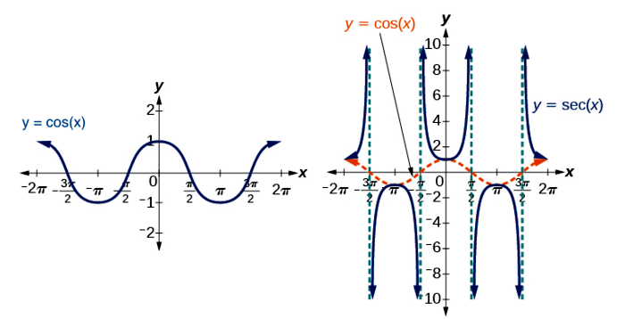{kind=link}
Cosine and secant are even functions, with symmetry around the $y$ -axis.
The cosine and secant functions are symmetric about the y-axis. Graphs that are symmetric about the $y$ -axis represent even functions. For even functions, any two points with opposite $x$ -values have the same function value. This is expressed mathematically as $f(-x) = f(x)$ for all $x$ in the domain of $f$ .
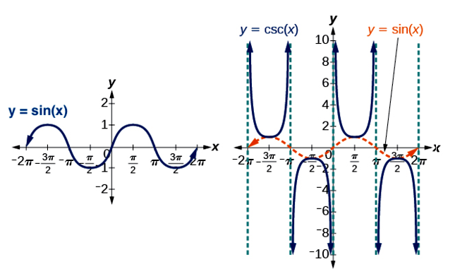{kind=link}
Sine and cosecant are odd functions, and are symmetric around the origin.
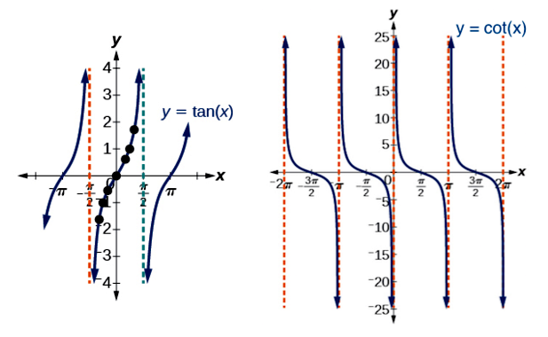{kind=link}
Tangent, and cotangent are odd functions, and are symmetric around the origin.
The sine, cosecant, tangent, and cotangent functions are symmetric about the origin. Graphs that are symmetric about the origin represent odd functions. For odd functions, any two points with opposite $x$ -values also have opposite $y$ -values. This is expressed mathematically as $f(-x) = -f(x)$ for all $x$ in the domain of $f$ .
Symmetry Identities
We can apply the definitions for even and odd functions to derive symmetry identities that correspond to each of our six trigonometric functions. The following symmetry identities are useful in finding the trigonometric function of a negative value.
Notice that only two of the trigonometric identities are even functions: cosine and secant. For these functions, we apply $f(-x) = f(x)$ to find the following identities:
For the odd trigonometric functions, we apply $f(-x) = -f(x)$ and find the following identities:
Example
Find the sine, cosine, and tangent of $\displaystyle{\theta = -\frac{5\pi}{6}}$ .
First, we can identify that the absolute value of $\theta$ is a special angle, $\displaystyle{\frac{5\pi}{6}}$ . We know from the unit circle that $\displaystyle{\cos{\left(\frac{5\pi}{6}\right)} = -\frac{\sqrt{3}}{2} }$ and $\displaystyle{\sin{\left(\frac{5\pi}{6}\right)} = \frac{1}{2} }$ .
Using these values from the unit circle, we can calculate $\displaystyle{\tan{\left(\frac{5\pi}{6}\right)}}$ :
Now that we know the sine, cosine, and tangent of $\displaystyle{\frac{5\pi}{6}}$ , we can apply the symmetry identities to find the functions of $\displaystyle{-\frac{5\pi}{6}}$ .
Applying the symmetry identity for cosine, we have:
$\displaystyle{ \begin{align} \cos{\left(-\frac{5\pi}{6}\right)} &= \cos{\left(\frac{5\pi}{6}\right)} \\ &= -\frac{\sqrt{3}}{2} \end{align} }$
Applying the identity for sine, we have:
$\displaystyle{ \begin{align} \sin{\left(-\frac{5\pi}{6}\right)} &= - \sin{\left(\frac{5\pi}{6}\right)} \\ &= - \frac{1}{2} \end{align} }$
Finally, applying the identity for tangent, we have: